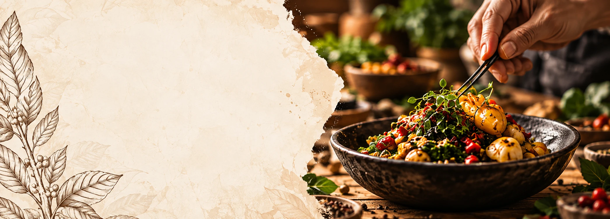

01
SUB-LÍNEA
Cluster
Articulación de actores del sector gastronómico para fortalecer procesos de investigación, innovación y desarrollo territorial.

Cuatro caminos para comprender, preservar y proyectar el patrimonio gastronómico colombiano.
Las sub-líneas de investigación nos permiten abordar el patrimonio gastronómico colombiano desde distintas perspectivas, integrando la cultura, la historia, los territorios y la innovación, para comprender y proyectar su valor en la sociedad actual.
Articulación de actores del sector gastronómico para fortalecer procesos de investigación, innovación y desarrollo territorial.
Investigación y creación de productos gastronómicos que rescatan la tradición e incorporan elementos de innovación.
Generación de conocimiento para el fortalecimiento de iniciativas y modelos de negocio en torno a la gastronomía.
Transferencia de conocimiento a comunidades y territorios, contribuyendo al desarrollo social, cultural y turístico.